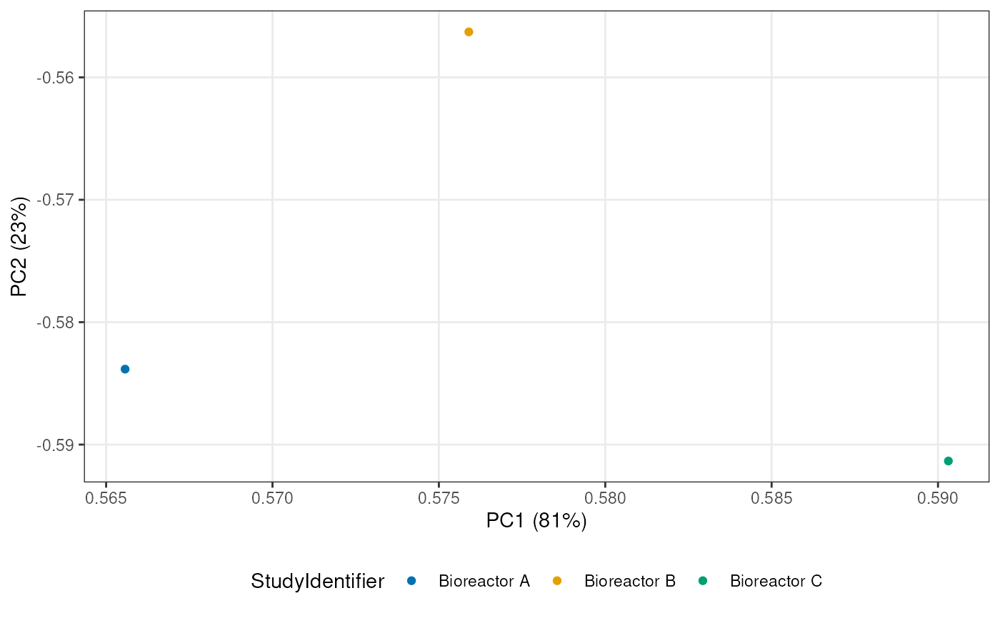

Plot two subject-level statistics against each other
Source:R/AllGenerics.R, R/plotSubjectScatter.R, R/zzz-mae.R
plotSubjectScatter.RdplotSubjectScatter() draws one point per subject from two
statistics that are constant within each subject, such as mean diversity
and its variability or resistance and resilience, or from two components
of the subject loadings of a tensor decomposition such as TEMPTED.
Usage
plotSubjectScatter(x, ...)
# S4 method for class 'SummarizedExperiment'
plotSubjectScatter(
x,
x.stat = NULL,
y.stat = NULL,
group,
colour.by = NULL,
quadrants = FALSE,
source = NULL,
ncomponents = 2,
...
)
# S4 method for class 'MultiAssayExperiment'
plotSubjectScatter(x, ..., experiment = 1L)Arguments
- x
a
SummarizedExperimentobject.- ...
additional arguments passed to
geom_point.- x.stat, y.stat
Character scalar. Specify the numeric columns fromcolData(x)drawn on the x and y axes. Not used withsource. (Default:NULL)- group
Character scalar. Specifies the column fromcolData(x)that identifies subjects.- colour.by
Character scalar. Specifies the column fromcolData(x), constant within subjects, that colours the points. (Default:NULL)- quadrants
Logical scalarorNumeric vectorof length 2. Draws reference lines that split the plot into quadrants: at the medians of the two statistics (TRUE) or at the given x and y values. (Default:FALSE)- source
Character scalar. Specifies a decomposition inmetadata(x)whose subject loadings are drawn instead ofx.statandy.stat: a result oftempted::tempted_all()(A_hat), a PARAFAC model whose first mode is subjects (Fac, with subjects as row names), or a matrix of subjects by components with subjects as row names. (Default:NULL)- ncomponents
Numeric scalarorvector. The two components ofsourceon the x and y axes:2for the first two, or two components by index or name. (Default:2)- experiment
Character scalarorinteger scalar. For aMultiAssayExperiment, the experiment to plot; its samples get thecolDataofx. (Default:1L)
Details
Subjects with a missing statistic are dropped. Subject loadings are
matched to group by subject name; colour.by must be
constant within subjects.
Examples
# Mean diversity against its standard deviation over each subject's
# samples
data("hitchip1006", package = "miaTime")
tse <- hitchip1006
tse <- tse[, tse$subject %in% names(which(table(tse$subject) >= 3))]
tse$mean <- ave(tse$diversity, tse$subject, FUN = mean)
tse$sd <- ave(tse$diversity, tse$subject, FUN = sd)
plotSubjectScatter(tse, x.stat = "mean", y.stat = "sd",
group = "subject", colour.by = "sex", quadrants = TRUE)
 # TEMPTED subject loadings of the bioreactors
if (requireNamespace("tempted", quietly = TRUE)) {
data("minimalgut", package = "miaTime")
tse <- minimalgut
counts <- t(SummarizedExperiment::assay(tse, "counts"))
S4Vectors::metadata(tse)$tempted <- tempted::tempted_all(counts,
timepoint = tse$Time_hr_num,
subjectID = as.character(tse$StudyIdentifier), r = 2,
threshold = 1, pseudo = 0.5, do_ratio = FALSE)
plotSubjectScatter(tse, group = "StudyIdentifier",
colour.by = "StudyIdentifier", source = "tempted")
}
#> Calculate the 1th Component
#> Convergence reached at dif=8.87596940345795e-08, iter=2
#> Calculate the 2th Component
#> Convergence reached at dif=2.19221530172096e-05, iter=6
# TEMPTED subject loadings of the bioreactors
if (requireNamespace("tempted", quietly = TRUE)) {
data("minimalgut", package = "miaTime")
tse <- minimalgut
counts <- t(SummarizedExperiment::assay(tse, "counts"))
S4Vectors::metadata(tse)$tempted <- tempted::tempted_all(counts,
timepoint = tse$Time_hr_num,
subjectID = as.character(tse$StudyIdentifier), r = 2,
threshold = 1, pseudo = 0.5, do_ratio = FALSE)
plotSubjectScatter(tse, group = "StudyIdentifier",
colour.by = "StudyIdentifier", source = "tempted")
}
#> Calculate the 1th Component
#> Convergence reached at dif=8.87596940345795e-08, iter=2
#> Calculate the 2th Component
#> Convergence reached at dif=2.19221530172096e-05, iter=6
